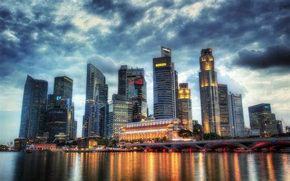
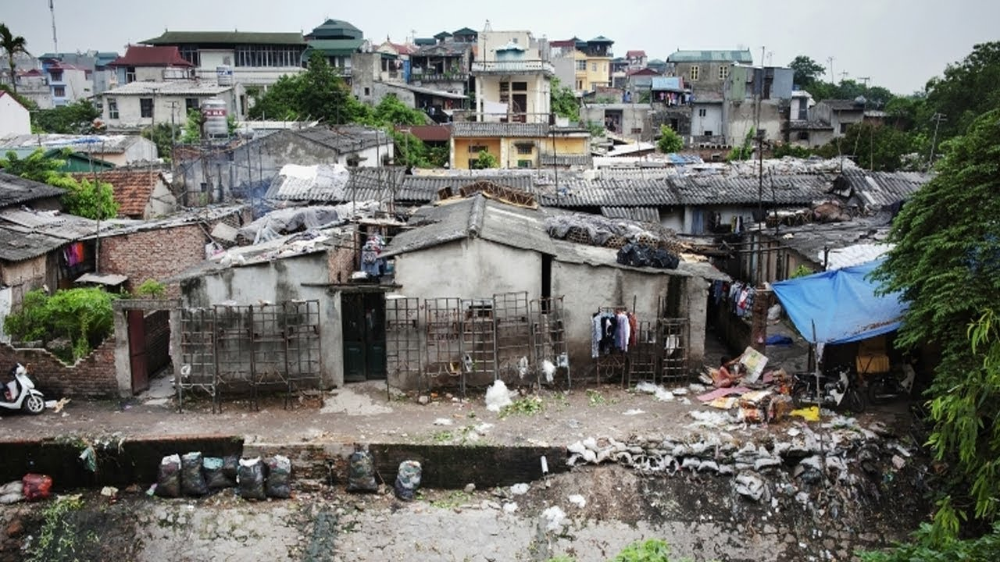

pros
With a population of over 1.3 billion people, India is a melting pot of religions, languages, and ethnicities. It is a secular nation that upholds democracy and freedom.
India has made significant contributions to art, literature, science, and philosophy.
youtube

cons
India faces a range of challenges, including poverty, environmental degradation, healthcare disparities, and social inequality. Addressing these challenges requires concerted efforts in education, healthcare, sustainable development, and social welfare.
youtube
